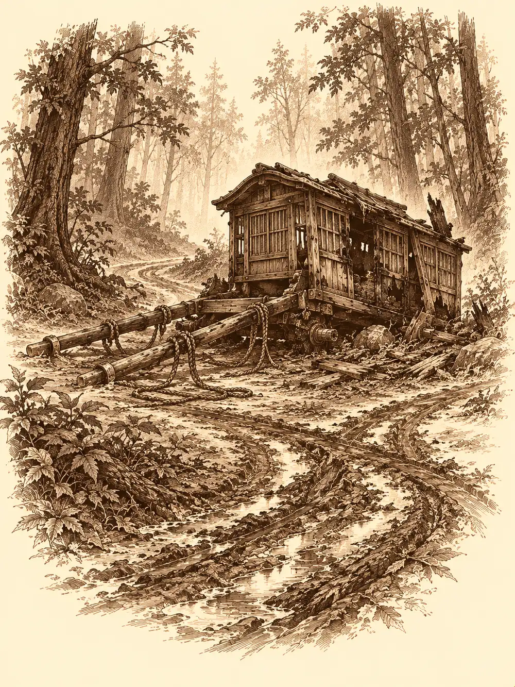

Capítulo 31
Peligro en el camino
Libro II · El favor del shogun
Guxi repartió las hojas sobre la mesa con la precisión de quien reparte cartas, una delante de cada recién llegado, y se quedó de pie con los nudillos apoyados en la madera.
"Nombre, raza, edad, habilidades. Si queréis ser cazadores, hay que rellenarlo".
Habían vuelto de Sho esa misma mañana, él, Jin y Sirth, y se habían encontrado la base llena de monos con túnica naranja, tres desconocidos durmiendo en ella y una nota de Sun Gukon clavada en la puerta: había tres nuevos, se volvía a su templo. Nada más. Shizuka los había puesto al día a su manera, con el mono, su ejército y su carro.
Mosto se acercó tambaleándose a pedir una hoja también, y alguien le dio una en blanco, por si acaso se la comía.
Maroxi miró la suya con escepticismo.
"¿Te das cuenta de que esto no sirve de nada? Podría escribir cualquier cosa, sea verdad o no".
"Si luego en el trabajo vemos que has mentido, a la calle".
"Entonces, ¿por qué no la rellenas tú, viendo lo que soy capaz de hacer?".
Ikari confesó en voz baja que no sabía escribir muy bien, y en su lugar le contó a Guxi que era de la misma aldea que Mosto. Mosto lo confirmó en silvano, desde el suelo, con la botella en la mano. Erk escribió su nombre y se quedó atascada en la siguiente casilla, preguntándose qué debía poner: si lechuza, o qué. En la hoja de Maroxi, cuando alguien se asomó a leerla, ponía: altura variable, peso modificable, piel incolora, pelo translúcido.
Sirth contemplaba todo aquello con cara de no aprobar en absoluto que ahora trabajaran así para el shogun. Maroxi, que no sabía quién era quién, preguntó quién mandaba en aquella casa.
Guxi se quedó pensando. Se le notó en la cara que la idea le gustaba.
"Jin llegó antes que tú", le recordó alguien. "Y manda más".
"Yo legalmente solo superviso".
"Entonces, ¿eres tú quien paga lo que se gasta en los viajes?".
"Lo paga el shogun".
Erk aprovechó para preguntar si le podían mejorar el arco. Guxi le dijo que se lo podía reparar gratis, pero que mejorarlo requería dinero y materiales; mil monedas, calculó en voz alta, y Maroxi comentó que había visto ciudades con menos dinero. Sirth le hizo a Erk, por detrás del funcionario, un gesto que significaba que habría que matarlo.
Ikari, sin decir nada, puso sobre la mesa un dibujo hecho a mano. Era el símbolo que había visto en su aldea arrasada. Los veteranos lo reconocieron al instante: la máscara de los seguidores de Otakemaru.
"Los tenemos fichados", dijo Guxi. "Estamos investigando su paradero. Por el momento, es todo lo que puedo decirte".
Fue Sirth quien zanjó la discusión. Hacía un par de días, el shogun les había hablado de una caravana extraviada en el bosque, ese bosque que no daba más que problemas. Que fueran los nuevos. Guxi los acompañaría para observarlos.
Sirth no se fiaba de Guxi, así que fue a buscar al enano. Desde detrás de la puerta de su cuarto se oía una melodía y el ronroneo de un trueno lejano.
"¿Estás ahí?".
Al abrir, encontraron al enano tumbado sobre el bakeneko, que estaba enroscado en medio de la habitación y lo tenía cogido con una zarpa, como a un muñeco. Erk dio un paso atrás.
"¿Ese gato no intentó matarte?".
"No le hagas caso. No sabe lo que dice".
Sirth cerró la puerta tras de sí para que Guxi no escuchara, y le pidió que fuera con los nuevos y los vigilara; el mono había escrito que eran buena gente, pero ellos no los conocían de nada, y que fuera él, que el funcionario iba también. Por el pasillo se oyeron pasos rápidos y puertas abriéndose de golpe.
"¿Hay un gato? ¿Puedo jugar con el gato?".
Shizuka entró corriendo y se tiró encima del bakeneko, que la recogió con la zarpa y la acurrucó contra su pelaje, y al poco Sirth también acabó pillado entre el gato y la niña, sacando apenas una mano. La niña se quedaría en casa jugando con él, y Sirth con ella.
"Soy la niñera del grupo", gruñó el clérigo.
Antes de salir pasaron por el pueblo. Guxi le compró a Erk unas flechas en la herrería, como gesto de buena fe. En la tienda del alquimista, el enano recibió una noticia mala y una buena. La mala: la mochila que le estaban haciendo la habían enviado a Sho, y el carro que tenía que traerla de vuelta se había extraviado por el camino. La buena: el alquimista sacó un tubo enorme, igual que el de Sota en el torneo. El enano se lo arrancó de las manos. Era un megáfono que triplicaba la voz y que, una vez al día, podía dejar aturdido a cualquiera que estuviera muy cerca al gritar a través de él.
En la tienda de pescado, el enano derribó la puerta de una patada y Guxi, detrás, la reparó con un gesto. Haru ni levantó la vista.
"Treinta monedas para cada uno".
Maroxi recibió la suya con asombro; no estaba acostumbrado a ganar dinero tan fácil.
En el burdel, la madame les preguntó si no se habrían gastado ya las cincuenta monedas que les había pagado por las cañerías. Maroxi le preguntó, con mucha educación, si se había fijado en que sus chicas no eran del todo humanas.
"Muy perspicaz". La mujer se apoyó en la mesa y se acercó a su cara. "Digamos que tus compañeros nos ayudaron a mis chicas y a mí".
Y por un instante, por un reflejo de la luz o por lo que fuera, la cara se le convirtió en una calavera. Maroxi retrocedió de un salto. La madame volvió a sonreír como si nada. El enano le puso a Maroxi una mano en el hombro.
"Bienvenido a Kuroto".
Antes de partir, el enano repartió las capas que Hitoshi había hecho con sus pieles. A Erk le dio la del brazo cortado, que ayudaba a moverse sin ruido y a tener la mano más rápida. A Ikari le ofreció la de oni. El tanuki la miró, la reconoció, y escupió al suelo a sus pies.
"Unos como este arrasaron mi tribu. No pienso llevar algo de mi enemigo".
"Podrías llevarla para demostrar que eres más fuerte que uno de ellos".
"No puedo".

El enano se encogió de hombros y la guardó.
"Que sepas que me caes mal".
El bosque estaba a media hora al norte. Los que no lo conocían sintieron que se les erizaba el vello de la nuca al acercarse: árboles altísimos, una niebla que lo cubría todo y una luz tenue, de atardecer, aunque fuera pleno día. Allí dentro había de todo. Erk se fijó en que el enano calzaba dos zapatillas muertas, cada una con un ojo y una lengua.
Aunque iban con dos que habían estado allí antes, se desviaron. Llegaron a un claro junto al agua, y allí vieron a tres personas de espaldas que deambulaban despacio, dos pasos a un lado, uno al otro, como perdidas. Emitían unos sonidos guturales que nadie entendía. Maroxi se acercó para ver si tenían la carne podrida, como los zombis de los que había oído hablar. Las tres figuras se volvieron.
No tenían cara. Ni ojos, ni nariz, ni boca. Solo piel lisa. Y vinieron hacia ellos.
La primera abrió lo que habría sido la boca, aunque no había boca, solo una carne que se estiraba hacia dentro, y soltó un grito horrible que quería meterles el miedo en el cuerpo. Ninguno se dejó llevar por él. Maroxi desenvainó el estoque y se puso a bailar. Una de las criaturas lo flanqueó y le hundió una daga en el costado; otra le acertó también, y el baile se le volvió más torpe. Guxi apartó a uno de los rostros lisos con un empujón de fuerza y prendió a otro con un chorro de fuego. Ikari lanzaba su magia desde la orilla, Erk disparaba desde lo alto y el enano susurraba palabras terribles a quien estuviera cerca. Maroxi lanzó un orbe brillante de colores que estalló contra una de ellas.
Cayeron las tres. El enano les vació los bolsillos y encontró diez monedas.
Maroxi se quedó mirando uno de los cadáveres. Luego, con la cabeza gacha, transformó su propia cara hasta dejarla igual de lisa. No veía nada. Le costaba respirar. No podía hablar. Al levantar la cabeza se encontró con el enano, que le estaba robando al muerto, mirándolo sin cara. La cara de Maroxi volvió a su ser.
Aquellas cosas no eran la caravana.
Erk subió por encima de las copas, donde solo se veía un mar de niebla, y bajó de nuevo hasta quedarse justo por debajo de las ramas. Desde allí descubrió, hacia el oeste, un hueco más ancho entre los árboles que parecía un camino. Lo era. Un camino de tierra con marcas de ruedas de carro.
Las rodadas giraban de golpe hacia dentro del bosque, rompiendo árboles a su paso, y terminaban en una carreta estrellada. No había caballos. Le faltaban las dos ruedas traseras, y por los costados, donde deberían haber estado, la madera estaba quemada. Las cuerdas del tiro estaban estiradas, como si alguien hubiera arrastrado algo. Entre las cajas había restos humanos chamuscados, un pie, un trozo de pierna.
El enano sacó una figurilla y de ella salió, invisible, la pequeña fantasma. Fue a husmear por los alrededores y volvió con una mano cortada.
Guxi rebuscó entre las pertenencias y encontró unos guantes. Los examinó con calma: le permitirían corregir un disparo errado de su cañón de fuerza, una vez al día. El enano, mientras tanto, revolvía las cajas en busca de lo que fuera. Ropa, sobre todo.
"¿Es este el carro de mi mochila?".
No lo era. Era el carro de alguien con dinero, no de un transportista.
Alguien tocó la madera quemada. Estaba fría; aquello había ocurrido hacía tiempo. Y en el camino, Erk vio desde arriba unas marcas que no tenían sentido: rodadas manchadas de hollín, pero que no iban en paralelo como las de un carro, sino que se cruzaban, una por un lado y otra en diagonal, como si fueran de ruedas sueltas.
Entonces el aire se rasgó.
Se abrió como una cremallera en el espacio, y por ella salió una rueda de carro envuelta en llamas que pasó rozando a Maroxi y le chamuscó la ropa. Por el otro lado apareció otra. Donde se cruzaban, el camino quedaba cortado por un muro de fuego de varios metros de altura.
En el centro de cada rueda había una cara humana, con los ojos rojos y la boca abierta en un grito.
"¡Iréis al infierno! ¡Todos iréis al infierno!", gritaban en abisal.
Una de ellas se volvió hacia Guxi y le disparó un rayo de fuego por un ojo, otro por el otro, y un tercero por la boca. Los tres fallaron.
Maroxi empezó a bailar sin espada, con los propios movimientos del cuerpo, y lanzó un nuevo orbe de colores, esta vez helado, derecho a la cara de la rueda que casi lo había atropellado. Las llamas se apagaron en un siseo y la cara se quedó cubierta de escarcha. La rueda cayó de lado.
"¡Frío!", gritó Maroxi. "¡Hay que usar frío!".
Ikari no necesitó que se lo repitieran. Lanzó rayos helados contra la segunda, y la rueda reventó.
El combate no había durado nada. El bosque, sin embargo, seguía ardiendo. Echaron tierra con las manos, con lo que encontraron, mientras el enano bufaba a través del megáfono con la esperanza de que el aire ayudara, y alguien le gritó que se callara antes de avivar el fuego. Al final consiguieron apagarlo. Quedó un trozo de bosque negro.
Las dos ruedas yacían en el suelo, frías, con las caras congeladas en una expresión extraña. Maroxi reconoció que aquellas llamas venían del abismo, del infierno o de algún lugar parecido, pero ya no quedaba en ellas ninguna magia activa. Clavó una daga en uno de los ojos. Saltaron chispas y manó sangre negra.
La recogió en el frasco vacío de una poción. Ikari sacó más recipientes y llenaron unos cuantos. Nadie supo decir qué era aquello. Alguien propuso preguntarle al alquimista.
El enano intentaba levantar una de las ruedas.
"¿Qué haces?", le preguntó Maroxi.
"Me las llevo. Voy a construir un carro".
Erk se acercó a Maroxi y le susurró al oído que aquel hombre tenía un problema en la cabeza: lo guardaba todo.
Volvieron a Ukio con frascos de sangre negra, ropa de muertos, unos guantes nuevos y dos ruedas infernales atadas a la espalda de un enano. De los viajeros de la caravana no quedaba nadie a quien llevar a casa.